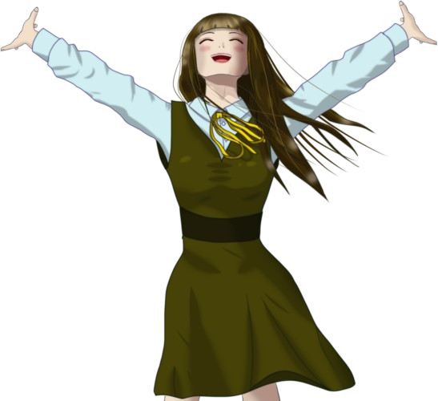

Friend with April Sickness
Atteeention, everyone!
 video: 桜.wmv
video: 桜.wmv
"Shiyo 800, April 7!
The genius girl acknowledged by herself and everyone else, Erina Goto, has enrolled at Motoki High School as of today!"
The genius girl acknowledged by herself and everyone else, Erina Goto, has enrolled at Motoki High School as of today!"
video: 桜.wmv"Who exactly are you asking for attention in Central Park..."


"Look, Niimura-senpai! Cherry blossoms in riotous bloom, a high blue sky!
And on top of that! All these stalls livening up our cherry-blossom viewing!
The reason so many of the stalls are orange is that it's a color that stimulates the appetite!"
"I feel like the saying 'dumplings over flowers' exists just for you..."
"Come on, come on! There's nothing for it but to tour the stalls! Operation start!"
"I feel like the saying 'dumplings over flowers' exists just for you..."
"Come on, come on! There's nothing for it but to tour the stalls! Operation start!"

"Hey, hey, mister! As of today, I'm a high schooler!
So-
o-
ooo!"
"Haggling right off the bat!?"
"Haggling right off the bat!?"
"Niimura-senpai! As of today, I'm a high schooler!"
"I know!"
"So- o- ooo!"
"O-okay, fine! Which one do you want!?"
"I know!"
"So- o- ooo!"
"O-okay, fine! Which one do you want!?"


"Huh? Niimura-senpai, aren't you eating?"
"My stomach's off today, so I'll just take mine to go. I still feel a little sick..."
"My stomach's off today, so I'll just take mine to go. I still feel a little sick..."
"Then have some of Goto's half-eaten stuff! You can eat a little, right?"
"Don't call it half-eaten! And besides, I'm the one who paid for it!"
"Don't call it half-eaten! And besides, I'm the one who paid for it!"
"Aww, I wish Kogori-senpai could've come too. But at this time of year, it can't be helped."
"Not with this many cherry blossoms out. I'll bring her a souvenir."
"Not with this many cherry blossoms out. I'll bring her a souvenir."
"Well, take care! Don't go to middle school by mistake starting tomorrow!"
"Senpai, thanks for the treat! Please give my regards to Kogori-senpai!"
"Senpai, thanks for the treat! Please give my regards to Kogori-senpai!"

Natsumi was probably laid up at home today too.
I stood in front of Natsumi's door holding the bag of takoyaki. [TN: takoyaki: fried batter balls with octopus inside]
I stood in front of Natsumi's door holding the bag of takoyaki. [TN: takoyaki: fried batter balls with octopus inside]
I pressed the intercom twice and waited for Natsumi to come out.
Before long, the door opened.
Before long, the door opened.


"Hey! How's it going?"
"Yeah... so-so."
Natsumi put on a polite smile.
She was still in her school uniform, and her color wasn't very good.
"Yeah... so-so."
Natsumi put on a polite smile.
She was still in her school uniform, and her color wasn't very good.
"Hmm... So your April sickness still isn't any better this year." [TN: A pun on gogatsu-byo, 'May sickness,' Japan's term for the May blues.]
"Well, it happens every year, so I'm used to it by now."
"I see..."
She may say she's used to it, but it's still painful.
A lot of it's probably in her head, so I'll try to tell her something fun.
"Well, it happens every year, so I'm used to it by now."
"I see..."
She may say she's used to it, but it's still painful.
A lot of it's probably in her head, so I'll try to tell her something fun.
"Over on our end, Goto went around stuffing her face at one food stall after another, and it was rough. Going 'Operation start' again and all that. What does she think my wallet is..."

"Ha! Goto may be tiny, but she's a big eater. Where does all that food go?"
"My stomach's been off since yesterday too, so I only snacked a little, though.
So, here. Souvenir!"
I handed her the bag of takoyaki.
I handed her the bag of takoyaki.
Natsumi took it with a puzzled look.
"It's takoyaki, so eat it while it's hot. See you!"
I closed the door without waiting for Natsumi to thank me. Once your business is done, there's no need to hang around.

I went into my house and sat down on the living-room sofa.
"Phew..."
In the empty room, I let out a big sigh.
"Phew..."
In the empty room, I let out a big sigh.
"I knew it... I can't say it..."
Read ✓ Next in this arc →